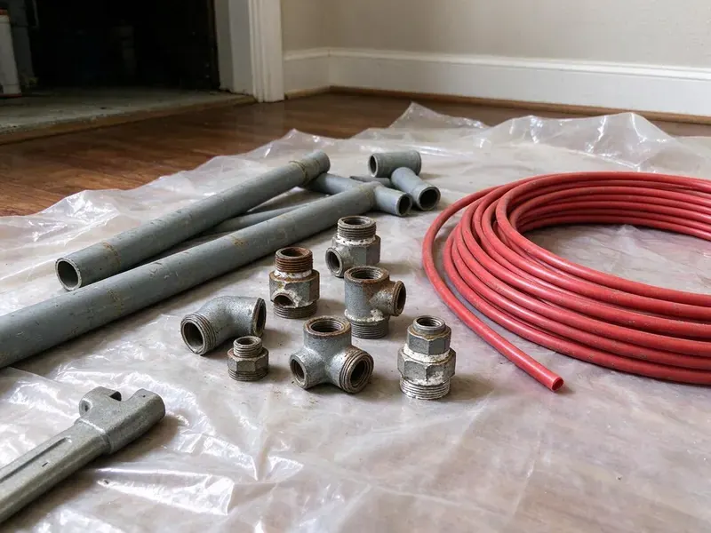
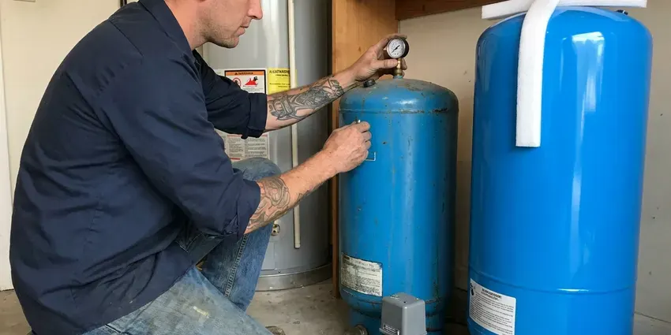
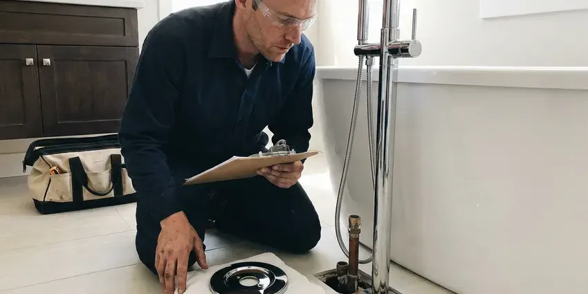

Tankless Water Heater Replacement in Chesterfield, MO
Tankless water heater replacement in Chesterfield, MO from FGV Plumbing, with a combustion test before we leave.
- Written Pricing
- Reliable Hot Water
- Navien and Rinnai Units
- Licensed Plumbers

Get Your New Tankless Installed in Chesterfield, MO.
Our licensed plumbers check the gas line and vent before the new unit goes up.
Licensed Tankless Replacement for Chesterfield, MO
FGV Plumbing replaces failing tankless water heaters with condensing and non-condensing units sized to your home's real flow demand. Gas supply, vent clearances and hardness get checked first. That way the new heater is not starved for fuel or choked by scale, which are the two most common reasons we see early failures.
Work we handle every week:
- Gas line sizing and upsizing for 199,000 BTU tankless units
- Clean tie-ins to existing plumbing and gas lines.
- Condensing unit installs with PVC venting and condensate neutralizers

Additional Plumbing Replacement Services in Chesterfield, MO
When repairs are no longer enough, our replacement services in Chesterfield, MO deliver modern, efficient equipment installed right.


Customers
Why Choose FGV Plumbing for Tankless Water Heater Replacement in Chesterfield, MO?
A tankless heater is only as good as its gas supply and venting. Both get measured before the quote, so the unit fires at full output under heavy demand. Full fire, full flow.
- Clean Venting, We route venting to meet manufacturer clearances from windows, doors and roof edges.
- Flexible Placement, Units fit small closets or on an exterior wall.
- Scale Protection, Every install includes isolation valves so the heat exchanger can be descaled without cutting pipe.
Citywide Coverage
Exterior wall or utility closet, we cover tankless installs all over Chesterfield with the same scheduling and pricing on every single job. Booking usually takes a day or two. Sometimes it is sooner.
Experienced Team
Ongoing training keeps our crew current on tankless installation and safety protocols for gas and condensing equipment from each manufacturer. Brands change their specs. We keep pace.
Safety-First Approach
Tankless safety starts with the vent termination. Manufacturers set minimum distances from windows, doors and air intakes, and local Missouri code may add its own rules on top. Each termination gets measured.
Trusted Certified Chesterfield Plumbing Services Professionals
At FGV Plumbing, we are proud to offer certified plumbing services throughout Chesterfield, MO. Credentials matter in this trade. Every repair, install and maintenance visit follows strict safety and quality rules, and the plumbers doing the work carry recognized industry credentials.
Call Us Now PHCC Plumbing Contractor Recognition
PHCC Plumbing Contractor Recognition Better Business Bureau (BBB) Accreditation
Better Business Bureau (BBB) Accreditation Angi Certified Pro
Angi Certified Pro ISO 9001 Quality Management Certification
ISO 9001 Quality Management CertificationPicking a Tankless for Your Chesterfield, MO Home
Gas Line Testing on Tankless Installs in Chesterfield, MO
Every gas connection on a tankless gets a soap test and a manometer reading at full fire before we leave the house. A line that holds pressure at rest can still sag under full load. Both readings get taken.

Emergency Tankless Water Heater Replacement in Chesterfield
No hot water from a tankless usually shows up as an error code on the controller, and the code tells us half of what we need to know. Send us a photo of the display. If the heat exchanger is leaking, replacement is the fix, and we can often have a new unit running the same or next day.
Recirculation Tankless Upgrades in Chesterfield, MO
Waiting a minute for hot water at the far bathroom wastes thousands of gallons a year in a long single-story house. Navien A models and Rinnai units with internal pumps can recirculate through a return line or a crossover valve under the farthest sink. We set a schedule. Usually just the morning and evening peaks.
Rinnai Tankless Water Heater Replacement in Chesterfield
Rinnai units we pull are usually 12 to 18 years old, and the failure tends to be a leaking heat exchanger or a dead control board. A current Rinnai often mounts on the same bracket. Less drywall work that way. We match the vent type or convert to PVC on a condensing model.
Commercial Tankless Water Heater Replacement in Chesterfield, MO
Commercial tankless setups in restaurants and offices often use two or more units on a manifold, with a controller that splits the load. We replace failed units without shutting down the rest. Health code sets the hot water temperature at the hand sinks and dish areas.
Commercial Tankless Replacement in Chesterfield
Cascade controls on a commercial rack decide which unit fires first, and after one unit is replaced they need rebalancing. Otherwise one unit does all the work. Descaling gets scheduled by usage.
Rinnai Condensing Upgrades in Chesterfield, MO
Rinnai Sensei condensing models replace older non-condensing Rinnai units in a lot of homes, but the venting changes from stainless to PVC. The vent swap is part of our job. Gas and water connections usually line up.

Tankless vs. Tank Replacement Cost in Chesterfield, MO
Tankless costs more up front than a tank, often twice as much installed. Over 20 years it can come out close, since a tankless can outlast two tanks and skips standby loss, but the payback depends on how much hot water your house uses. You see both quotes.
Tankless Replacement Near You in Chesterfield, MO
Searching for tankless water heater replacement near you in Chesterfield, MO usually starts with an error code on the controller and a cold shower. Read us the code. It often points straight to the problem.
Our service area covers all of Chesterfield, MO, so a plumber who knows tankless is never far from your door. Response times are short. Most swaps finish in one visit.
FGV Plumbing at a Glance
- Fully licensed plumbing team covering Chesterfield, MO
- Same-day appointments and 24/7 emergency response
- Clear written estimates, no hidden fees
- 4.9-star rated by 307+ Missouri customers
Chesterfield Map
Chesterfield Information
- Population
- 49,166
- Area codes
- 636/314/573
- Service area
- Chesterfield and communities within 40 miles
- Nearby
- Ballwin, Wildwood, St. Peters, St. Charles
Replacing a worn tankless in Chesterfield, MO makes the most sense when the new unit gets flush valves and a gas line that can feed it at full fire.
Talk to a Plumber
Reach out to FGV Plumbing for reliable plumbing work done by licensed pros in Chesterfield, MO.
Our Specialized Plumbing Services in Chesterfield, MO
At FGV Plumbing, you get every kind of plumbing service from one company across Chesterfield, MO. From leak detection to full system installs, our team works fast and charges fair prices on homes and commercial properties alike. Explore our core services below:



Bathroom Plumbing in Chesterfield


What to Expect on a Tankless Replacement in Chesterfield, MO
From the first call to the final combustion test, each step is short.
Call Us
Call (816) 330-2338 with your current model number and a photo of the install. We give you a ballpark price and schedule a visit.
Size and Inspect
Our tech measures gas line size, meter capacity, venting path and water hardness. Then we recommend a unit that matches your demand.
Install and Test
We remove the old heater, install the new one with service valves and venting, then test gas pressure and combustion. You get a walkthrough on settings and annual flushing.
Frequently Asked Questions About Tankless Water Heater Replacement in Chesterfield
A like-for-like gas tankless swap usually runs $2,800 to $4,500 installed. Tank-to-tankless conversions run $4,000 to $6,500 with the gas and vent upgrades. The quote is written before work starts.
Clear a path to the heater and a few feet around it. Keep pets and kids out of the work area while we have the gas and water shut off, which usually runs a few hours. We take care of draining and disconnecting.
A direct swap usually takes four to six hours. Conversions with new gas and venting take all day.
Error codes that keep coming back are the most common sign. Temperature swings in the shower, weaker hot water flow and water inside the cabinet all point the same way, especially on a unit older than 15 years. Frequent repairs get expensive.
Yes, for most homes. Tankless units only heat water when a tap opens, so they skip the standby loss of keeping 50 gallons hot all day, and the savings are biggest in homes with irregular hot water use. Savings vary with usage.
Yes, and it is one of the most common upgrades we do. Most conversions need a bigger gas line and new venting, and sometimes electrical work for a condensing unit, which is why the job takes a full day. This is not a weekend project.
Manufacturer coverage on the heat exchanger usually runs 10 to 15 years, with 3 to 5 years on parts. FGV Plumbing also warranties the installation. We go over every term before the install so you know exactly what is covered and for how long it lasts.
Most tankless swaps land between four and eight hours. Conversions run longer since they may need new gas pipe, a new vent and a new spot on the wall. You usually have hot water by evening.
Hear From Customers Who Hired Our Plumbing Experts

Greg S.
I manage a small strip center with six tenants. FGV Plumbing handles our annual backflow testing and fixed a recurring clog in the shared sewer line that had been backing into the nail salon. Their reports come in clean and on time.
Commercial Plumbing · St. Peters, MO
Tyler J.
We bought a taller comfort height toilet for my dad, who just had knee surgery. The plumber pulled the old one, found the flange was cracked, and replaced it before setting the new bowl. Took about two hours.
Toilet Installation · St. Peters, MONathan E.
Our tankless heater kept throwing an error code and shutting off mid shower. The tech flushed the heat exchanger, which was full of scale, and replaced a bad flow sensor. Hot water has been steady for half a year now.
Water Heater Repair · St. Peters, MO
Sofia M.
Two new toilets went in during one visit. The tech set them on new wax rings and swapped the old supply lines. He also noticed our bathroom faucet dripping and replaced the cartridge while he was there. No mess left behind.
Toilet Installation · University City, MODaniel K.
A pipe burst in the garage ceiling at 11 at night. Someone answered on the second ring, and the plumber was in my driveway about fifty minutes later. He shut off the main, cut out the split section, and had water back on before 2 am.
Emergency Plumbing · University City, MOMonica A.
Our water bill nearly doubled in one month with no change in how we used water. The tech checked the meter, heard the leak under the hallway with his equipment, and opened a hole about a foot square. Fixed the same day.
Slab Leak Repair · Chesterfield, MO